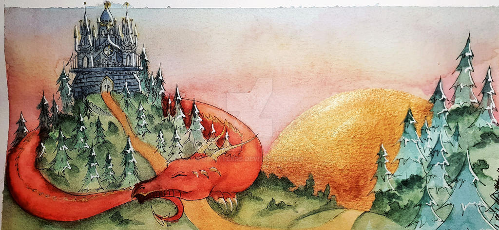
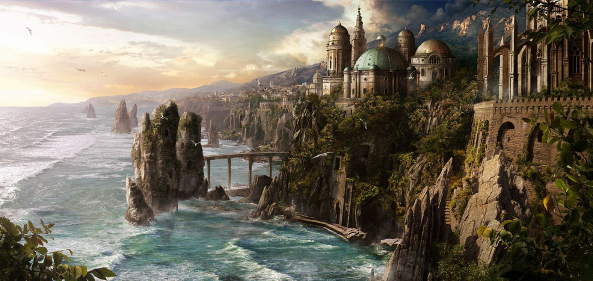
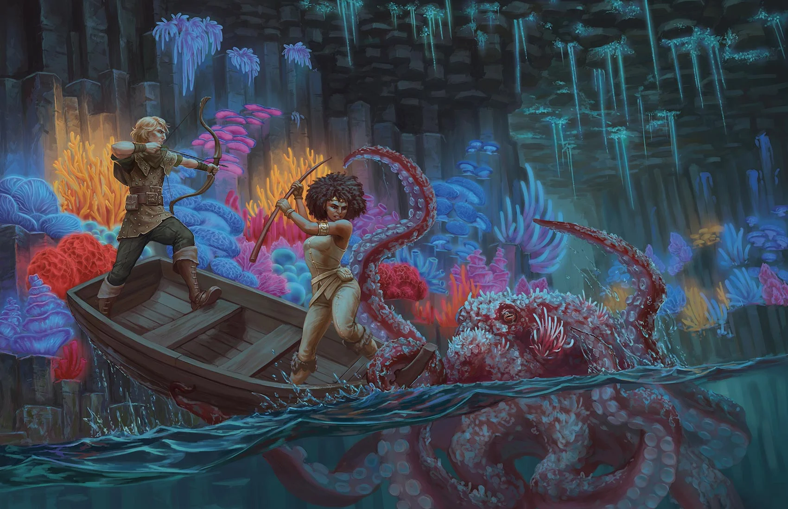

LOCATIONS

Dragon's Rest
A quaint village inhabited by Kobolds and a few humans. Here they worship the Dragon god Bahamut and strive for peace. It is currently the Festival of Peace, where the whole town has a nightly meal together to celebrate their tranquil home.

Stormwreck Isle
A rocky island with a mysterious past. Born out of the fires of Sharruth's Grave, Stormwreck Isle emanates a magical energy that draws to it dragons and spirits from all over the world. It is said that Sharruth's evil magic still permeates the surface of the island.

Seagrow Caves
Home of the Myconids. A beautiful series of caves dimly lit by bioluminescent fungi. All is not well with the Myconids as they have ceased communication with Tarak.